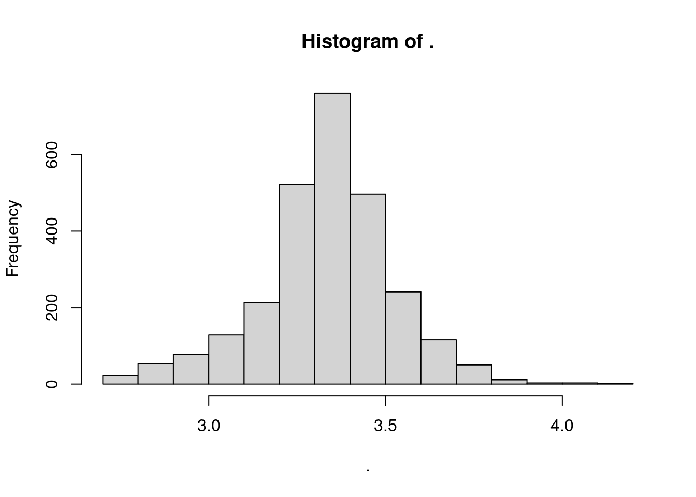
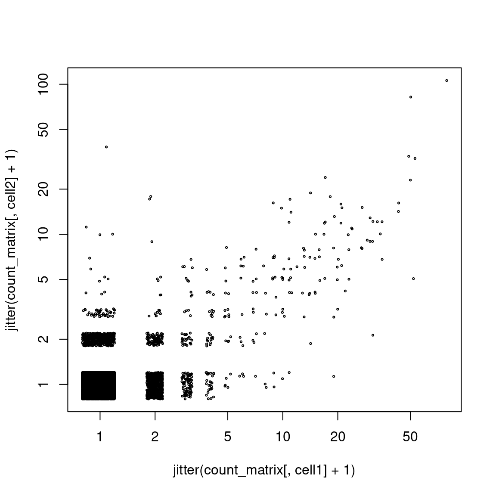
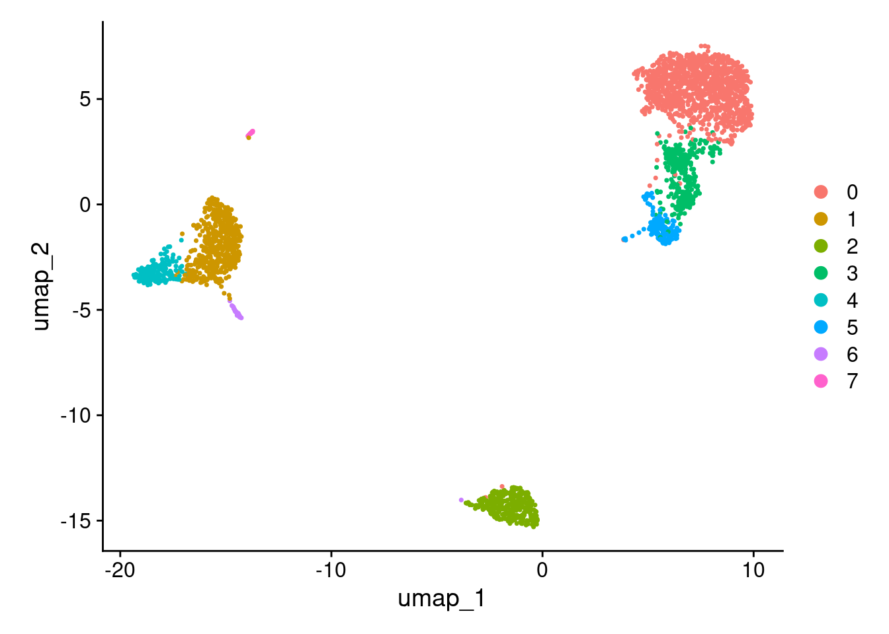
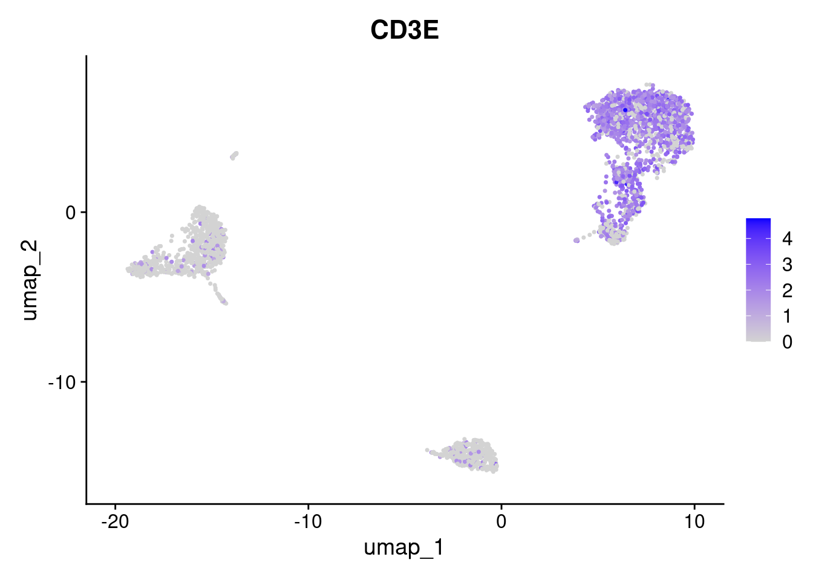
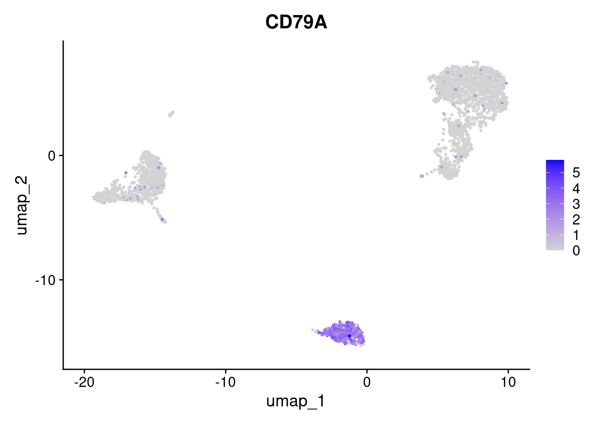

suppressPackageStartupMessages({
library( Seurat )
library( Matrix )
library( magrittr ) })A simple analysis with Seurat
Seurat
To get a first feel for single-cell RNA-Seq data, we will perform a simple standard analysis using Seurat, an R package offering comprehensive functionality to analyse such data. Seurat has been developed by Rahul Satija and his research group at New York University and is described in multiple publications. The package is named for French pointilist painter Georges Seurat. The web site for Seurat is here.
We load the package in R. We will also need the Matrix package and the magrittr package.
First example data: PBMCs
Our first example data set is a single-cell RNA-Seq data set produced by 10X (the manufacturer of the leading microfluidics platform for single-cell sequencing) to demonstrate their product.
They took a sample of peripheral blood (i.e., blood taken from a vein) of a human donor and removed all red blood cells and platelets (which both have no nucleus) and all white blood cells with multiple nuclei, leaving us only those types of white blood cells that have a single nucleus, i.e., with “peripheral-blood mononuclear cells”: PBMC.
A count matrix has been obtained from the sequencing reads, using 10X’s “Cellranger” software. The matrix is available from teh 10X web site, here.
The matrix is provided in 10X’s own format. Seurat has a function to load this:
count_matrix <- Read10X( "data/pbmc3k/filtered_gene_bc_matrices/hg19/" )First look at the count matrix
The matrix is provided as a sparse matrix (as defined in the Matrix package):
class( count_matrix )[1] "dgCMatrix"
attr(,"package")
[1] "Matrix"Specifically, it is a column-sparse matrix (one of three standard storage formats for sparse matrices).
Let’s have a look at the top left corner of the matrix
count_matrix[ 1:10, 1:10 ]10 x 10 sparse Matrix of class "dgCMatrix" [[ suppressing 10 column names 'AAACATACAACCAC-1', 'AAACATTGAGCTAC-1', 'AAACATTGATCAGC-1' ... ]]
MIR1302-10 . . . . . . . . . .
FAM138A . . . . . . . . . .
OR4F5 . . . . . . . . . .
RP11-34P13.7 . . . . . . . . . .
RP11-34P13.8 . . . . . . . . . .
AL627309.1 . . . . . . . . . .
RP11-34P13.14 . . . . . . . . . .
RP11-34P13.9 . . . . . . . . . .
AP006222.2 . . . . . . . . . .
RP4-669L17.10 . . . . . . . . . .All entiries are zero (denoted as dot).
We have rows for the genes and columns for the cell barcodes:
dim( count_matrix )[1] 32738 2700The rows are labelled with gene symbols:
rownames(count_matrix) %>% head(20) [1] "MIR1302-10" "FAM138A" "OR4F5" "RP11-34P13.7"
[5] "RP11-34P13.8" "AL627309.1" "RP11-34P13.14" "RP11-34P13.9"
[9] "AP006222.2" "RP4-669L17.10" "OR4F29" "RP4-669L17.2"
[13] "RP5-857K21.15" "RP5-857K21.1" "RP5-857K21.2" "RP5-857K21.3"
[17] "RP5-857K21.4" "RP5-857K21.5" "OR4F16" "RP11-206L10.3"The columns are labelled with cell barcodes:
colnames(count_matrix) %>% head(20) [1] "AAACATACAACCAC-1" "AAACATTGAGCTAC-1" "AAACATTGATCAGC-1" "AAACCGTGCTTCCG-1"
[5] "AAACCGTGTATGCG-1" "AAACGCACTGGTAC-1" "AAACGCTGACCAGT-1" "AAACGCTGGTTCTT-1"
[9] "AAACGCTGTAGCCA-1" "AAACGCTGTTTCTG-1" "AAACTTGAAAAACG-1" "AAACTTGATCCAGA-1"
[13] "AAAGAGACGAGATA-1" "AAAGAGACGCGAGA-1" "AAAGAGACGGACTT-1" "AAAGAGACGGCATT-1"
[17] "AAAGATCTGGGCAA-1" "AAAGCAGAAGCCAT-1" "AAAGCAGATATCGG-1" "AAAGCCTGTATGCG-1"The column sums of the matrix tell us how many reads we got per cell:
colSums(count_matrix) %>% head(20)AAACATACAACCAC-1 AAACATTGAGCTAC-1 AAACATTGATCAGC-1 AAACCGTGCTTCCG-1
2421 4903 3149 2639
AAACCGTGTATGCG-1 AAACGCACTGGTAC-1 AAACGCTGACCAGT-1 AAACGCTGGTTCTT-1
981 2164 2176 2260
AAACGCTGTAGCCA-1 AAACGCTGTTTCTG-1 AAACTTGAAAAACG-1 AAACTTGATCCAGA-1
1276 1103 3918 2392
AAAGAGACGAGATA-1 AAAGAGACGCGAGA-1 AAAGAGACGGACTT-1 AAAGAGACGGCATT-1
2412 3034 1152 792
AAAGATCTGGGCAA-1 AAAGCAGAAGCCAT-1 AAAGCAGATATCGG-1 AAAGCCTGTATGCG-1
1348 1158 4586 2929 Here is a histogram of the total read counts per cell, on a log10 scale
colSums(count_matrix) %>% log10() %>% hist() 
Let’s pick an arbitrary cell and ask what genes were expressed in this cell:
cell <- 1423
count_matrix[ , cell ] %>% sort(decreasing=TRUE) %>% head(50) B2M MALAT1 TMSB4X RPL11 RPS18 RPL13 RPL10 RPL18A
72 65 46 25 23 20 19 19
RPL13A MT-CO1 RPS12 RPL23A RPL3 RPS14 RPS6 PTPRCAP
19 19 18 18 18 17 17 17
RPS3 RPS2 RPS15A EEF1A1 RPL7 RPL19 RPL28 RPL9
17 17 17 16 16 16 16 15
RPS27 RPL32 RPS23 RPL15 HLA-DPB1 RPL6 RPL21 ACTB
14 14 14 13 13 13 13 12
NKG7 RPS8 HLA-C RPL12 RPLP1 RPS27A RPL31 RPL34
12 11 11 11 11 10 10 10
RPS3A RPS20 RPLP2 CCL5 RPS15 RPL36 MT-CO2 RPS7
10 10 10 10 10 9 9 8
RPL35A RPS4X
8 8 We can also ask how often each value appears:
table( count_matrix[ , cell] )
0 1 2 3 4 5 6 7 8 9 10 11 12
31919 594 89 30 12 10 15 11 11 2 8 4 2
13 14 15 16 17 18 19 20 23 25 46 65 72
4 3 1 4 6 3 4 1 1 1 1 1 1 What are the most strongly expressed genes? Let’s average over all cells:
rowMeans(count_matrix) %>% sort(decreasing=TRUE) %>% head(30) MALAT1 TMSB4X B2M RPL10 RPL13 RPL13A FTL RPS2
59.88333 46.00370 44.94926 32.78407 28.55963 28.46037 27.66741 24.13148
RPS6 FTH1 RPS18 RPL11 RPL32 RPS3 RPL19 RPS12
23.16519 21.23741 20.52333 19.12370 19.10815 18.89815 18.15852 17.87259
RPLP1 ACTB RPL3 RPS27 RPS19 RPS14 EEF1A1 RPL18A
17.57407 17.54185 17.48593 16.70148 16.24370 16.04000 15.52000 15.17741
MT-CO1 RPL28 TMSB10 RPS4X RPLP2 RPL21
14.51519 14.30741 13.81704 13.76704 13.21630 12.96333 How similar are two arbitrarily picked cells?
cell1 <- 1352
cell2 <- 762
plot(
jitter( count_matrix[,cell1] + 1 ),
jitter( count_matrix[,cell2] + 1),
cex=.3, log="xy" )
Analysis with Seurat
count_matrix %>%
CreateSeuratObject() %>%
NormalizeData() %>%
FindVariableFeatures() %>%
ScaleData() %>%
RunPCA( npcs=20 ) %>%
FindNeighbors( dims=1:20 ) %>%
FindClusters( resolution=0.5 ) %>%
RunUMAP( dims=1:20 ) -> seuWarning: Feature names cannot have underscores ('_'), replacing with dashes
('-')Normalizing layer: countsFinding variable features for layer countsCentering and scaling data matrixPC_ 1
Positive: CST3, TYROBP, LST1, AIF1, FTL, FCN1, LYZ, FTH1, S100A9, FCER1G
TYMP, CFD, LGALS1, S100A8, CTSS, LGALS2, SERPINA1, SPI1, IFITM3, PSAP
CFP, SAT1, IFI30, COTL1, S100A11, NPC2, LGALS3, GSTP1, PYCARD, NCF2
Negative: MALAT1, LTB, IL32, CD2, ACAP1, STK17A, CTSW, CD247, CCL5, GIMAP5
AQP3, GZMA, CST7, TRAF3IP3, MAL, HOPX, ITM2A, GZMK, MYC, GIMAP7
BEX2, ETS1, LDLRAP1, ZAP70, LYAR, RIC3, TNFAIP8, NKG7, KLRG1, SAMD3
PC_ 2
Positive: NKG7, PRF1, CST7, GZMA, GZMB, FGFBP2, CTSW, GNLY, GZMH, SPON2
CCL4, FCGR3A, CCL5, CD247, XCL2, CLIC3, AKR1C3, SRGN, HOPX, CTSC
TTC38, S100A4, ANXA1, IL32, IGFBP7, ID2, ACTB, XCL1, APOBEC3G, SAMD3
Negative: CD79A, MS4A1, TCL1A, HLA-DQA1, HLA-DRA, HLA-DQB1, LINC00926, CD79B, HLA-DRB1, CD74
HLA-DPB1, HLA-DMA, HLA-DQA2, HLA-DRB5, HLA-DPA1, HLA-DMB, FCRLA, HVCN1, LTB, BLNK
KIAA0125, P2RX5, IRF8, IGLL5, SWAP70, ARHGAP24, SMIM14, PPP1R14A, FCRL2, C16orf74
PC_ 3
Positive: PPBP, PF4, SDPR, SPARC, GNG11, NRGN, GP9, RGS18, TUBB1, CLU
HIST1H2AC, AP001189.4, ITGA2B, CD9, TMEM40, CA2, PTCRA, ACRBP, MMD, NGFRAP1
TREML1, F13A1, RUFY1, SEPT5, MPP1, TSC22D1, CMTM5, RP11-367G6.3, MYL9, GP1BA
Negative: HLA-DQA1, CD79A, CD79B, HLA-DQB1, HLA-DPB1, CD74, HLA-DPA1, MS4A1, HLA-DRB1, HLA-DRB5
HLA-DRA, HLA-DQA2, TCL1A, LINC00926, HLA-DMB, HLA-DMA, HVCN1, FCRLA, IRF8, BLNK
KIAA0125, SMIM14, PLD4, P2RX5, IGLL5, SWAP70, LAT2, TMSB10, IGJ, MZB1
PC_ 4
Positive: HLA-DQA1, HIST1H2AC, PF4, CD79A, SDPR, CD79B, PPBP, GNG11, HLA-DQB1, SPARC
MS4A1, CD74, GP9, HLA-DPB1, RGS18, NRGN, PTCRA, CD9, HLA-DQA2, AP001189.4
CLU, TUBB1, CA2, HLA-DRB1, HLA-DPA1, ITGA2B, HLA-DRA, TCL1A, TMEM40, ACRBP
Negative: VIM, S100A8, S100A6, S100A4, TMSB10, S100A9, IL32, GIMAP7, S100A10, LGALS2
RBP7, MAL, FCN1, LYZ, CD2, S100A12, MS4A6A, FYB, S100A11, AQP3
GIMAP4, FOLR3, ANXA1, MALAT1, AIF1, GIMAP5, IL8, IFI6, TRABD2A, ASGR1
PC_ 5
Positive: GZMB, FGFBP2, NKG7, GNLY, PRF1, CCL4, CST7, SPON2, GZMA, GZMH
CLIC3, XCL2, CTSW, TTC38, AKR1C3, CCL5, IGFBP7, XCL1, S100A8, CCL3
TYROBP, HOPX, CD160, HAVCR2, S100A9, FCER1G, PTGDR, LGALS2, RBP7, S100A12
Negative: LTB, VIM, AQP3, PPA1, MAL, KIAA0101, CD2, CORO1B, CYTIP, FYB
IL32, TRADD, ANXA5, TUBA1B, HN1, PTGES3, TYMS, ITM2A, COTL1, GPR183
ACTG1, TNFAIP8, ATP5C1, TRAF3IP3, GIMAP4, PRDX1, ZWINT, ABRACL, NGFRAP1, LDLRAP1 Computing nearest neighbor graphComputing SNNModularity Optimizer version 1.3.0 by Ludo Waltman and Nees Jan van Eck
Number of nodes: 2700
Number of edges: 120276
Running Louvain algorithm...
Maximum modularity in 10 random starts: 0.8640
Number of communities: 8
Elapsed time: 0 secondsWarning: The default method for RunUMAP has changed from calling Python UMAP via reticulate to the R-native UWOT using the cosine metric
To use Python UMAP via reticulate, set umap.method to 'umap-learn' and metric to 'correlation'
This message will be shown once per session18:24:27 UMAP embedding parameters a = 0.9922 b = 1.11218:24:27 Read 2700 rows and found 20 numeric columns18:24:27 Using Annoy for neighbor search, n_neighbors = 3018:24:27 Building Annoy index with metric = cosine, n_trees = 500% 10 20 30 40 50 60 70 80 90 100%[----|----|----|----|----|----|----|----|----|----|**************************************************|
18:24:27 Writing NN index file to temp file /tmp/Rtmpmb1iyX/file1446437f4addf
18:24:27 Searching Annoy index using 1 thread, search_k = 3000
18:24:28 Annoy recall = 100%
18:24:29 Commencing smooth kNN distance calibration using 1 thread with target n_neighbors = 30
18:24:29 Initializing from normalized Laplacian + noise (using RSpectra)
18:24:30 Commencing optimization for 500 epochs, with 111204 positive edges
18:24:34 Optimization finishedUMAPPlot( seu ) + ggplot2::coord_equal()
In this plot, each cell is represented by a point in a so-called dimension-reduced embedding. This means that the points have been arranged such that cells that are similar appear close to each other while cells that are very different are put far apart from each other.
We will discuss soon in detail how such dimension reduction works and, importantly, what is meant by “similar”.
Seurat has also run a “clustering” algorithm that assigns the cells to different “clusters” of cells that are similar to each other. Colours are used here to indicate cluster membership.
We observe that the cells fall into three big groups that each split into a number of smaller clusters.
Identifying cell types
We suspect that these represent different types of white blood cells. There should be B-cells, T-cells and perhaps monocytes.
T cells are defined as white blood cells that show a the T-cell receptor as their surface, a protein complex made up of various proteins, one of which is called the T-cell receptor epsilon chain. This protein is described for the gene CD3E. We can ask Seurat to indicate the read counts for this gene in the UMAP plot:
FeaturePlot( seu, "CD3E")
We conclede that clusters 0 and 3 are probably the T cells.
We can also colour for CD79A, a marker for B cells:
FeaturePlot( seu, "CD79A")
To find out what the group to the left is, we can go another way. Let’s ask Seurat to find genes that are expressed much mroe strongly in clusters 1 and 4 than in clusters 0, 2, 3, 5:
FindMarkers( seu, ident.1=c(1,4), ident.2=c(0,2,3,5), test.use="t" ) -> m
head( m, 50 ) p_val avg_log2FC pct.1 pct.2 p_val_adj
LST1 0.000000e+00 5.2602174 0.969 0.147 0.000000e+00
CST3 0.000000e+00 5.6816322 0.994 0.193 0.000000e+00
TYROBP 0.000000e+00 4.5599105 0.995 0.194 0.000000e+00
FCER1G 0.000000e+00 3.9303734 0.953 0.153 0.000000e+00
AIF1 0.000000e+00 4.8394973 0.968 0.171 0.000000e+00
PTPRCAP 0.000000e+00 -4.3390790 0.123 0.820 0.000000e+00
LGALS1 0.000000e+00 3.5888431 0.982 0.303 0.000000e+00
CTSS 0.000000e+00 3.3704116 0.956 0.370 0.000000e+00
IL32 0.000000e+00 -4.5060681 0.123 0.703 0.000000e+00
S100A11 0.000000e+00 2.9021375 0.959 0.381 0.000000e+00
LYZ 0.000000e+00 5.5523830 0.995 0.471 0.000000e+00
SAT1 0.000000e+00 3.1880331 0.972 0.454 0.000000e+00
COTL1 0.000000e+00 2.9140976 0.974 0.505 0.000000e+00
S100A6 0.000000e+00 2.4265040 0.992 0.712 0.000000e+00
S100A4 0.000000e+00 2.1051825 1.000 0.752 0.000000e+00
OAZ1 0.000000e+00 1.9165328 0.995 0.877 0.000000e+00
FTL 0.000000e+00 3.6241681 1.000 0.983 0.000000e+00
FTH1 0.000000e+00 3.1675076 1.000 0.984 0.000000e+00
CD3D 4.886112e-319 -4.3674643 0.092 0.670 1.599615e-314
TYMP 3.882155e-306 4.2566370 0.926 0.151 1.270940e-301
S100A9 1.783818e-297 7.0670428 0.962 0.154 5.839865e-293
PSAP 1.902707e-294 2.9956639 0.934 0.359 6.229083e-290
FCN1 9.535250e-274 5.5804410 0.896 0.092 3.121650e-269
CYBA 8.453508e-272 1.5333488 0.991 0.797 2.767510e-267
MALAT1 1.181579e-262 -1.5311747 1.000 1.000 3.868252e-258
LTB 4.335583e-260 -3.5012014 0.348 0.824 1.419383e-255
NPC2 1.360721e-240 3.2405179 0.896 0.252 4.454729e-236
CD3E 8.066458e-236 -3.7395374 0.104 0.612 2.640797e-231
CFD 7.012340e-210 5.9290434 0.822 0.036 2.295700e-205
S100A8 1.234624e-205 7.2702939 0.855 0.084 4.041912e-201
HLA-DRA 9.958375e-200 0.9548420 0.945 0.423 3.260173e-195
GABARAP 3.036143e-190 2.4215683 0.881 0.351 9.939724e-186
CD7 2.761808e-188 -4.2406042 0.058 0.475 9.041608e-184
GSTP1 8.906341e-186 2.9200924 0.877 0.315 2.915758e-181
RPS27 6.463844e-178 -1.2827741 0.988 0.998 2.116133e-173
CD68 5.216417e-175 5.1623519 0.757 0.039 1.707751e-170
GPX1 2.638599e-174 3.1465728 0.853 0.267 8.638245e-170
SERPINA1 5.945946e-174 4.6390651 0.770 0.069 1.946584e-169
LCK 2.819845e-170 -3.6083579 0.058 0.464 9.231609e-166
NEAT1 1.968831e-169 1.8285530 0.928 0.540 6.445560e-165
RPL3 5.794248e-169 -1.1390928 0.994 0.999 1.896921e-164
PYCARD 8.652551e-167 2.7349426 0.824 0.215 2.832672e-162
LGALS2 4.290216e-165 6.6287302 0.743 0.029 1.404531e-160
RPL13A 9.270560e-165 -0.8866787 1.000 1.000 3.034996e-160
RPS27A 2.750106e-158 -1.7498987 0.911 0.996 9.003298e-154
CD2 8.578003e-155 -4.2838412 0.052 0.407 2.808267e-150
RAC1 1.921305e-154 2.2617174 0.845 0.294 6.289968e-150
CXCR4 2.275604e-153 -2.6822981 0.285 0.701 7.449873e-149
RPL23A 2.157301e-152 -1.2329204 0.980 0.997 7.062571e-148
TKT 2.978425e-152 2.8123604 0.793 0.200 9.750769e-148From this list, an immunologist would quickly see that these cells are monocytes.
Back to math
What is happening inside Seurat.
A few questions we might have:
- How do we define “similarity” of cells?
- Each cell is represented by a vector of count values. Can we simply define a metric or distance measure in that space to quantify similarity?
- It will turn out that this does not work, due to the counting noise. Why?
- How can we make cells with differing total read count comparable?
- We will overcome the count-noise issue by performing a principal component analysis (a matrix decomposition based on the eigendecomposition). Why does that work?
- The cells seem to be living in a high-dimensional space. Can this really be faithfully shown by a two-dimensional plot? How do we check the faithfulness? Here, we will get into a rabbit hole involving multi-variate optimization, metrics in distribution spaces, interactive visualizations and maybe GPU programming.
- How to suitable define “clusters” of similar cells? This will lead us to applications of graph theory.
The manifold hypothesis
A teaser to the core idea in single-cell analysis:
Cells “live” in a “state space” that is spanned by all the possible configurations of the cells in the organism. When a cell reacts to a stimulus or changes its state for another reason, this will be a continuous (maybe even smooth?) move in this statespace.
However, we cannot observe the state space directly – but we assume that each state is associated with a transcriptome, i.e., a measure or distribution in the space of read count vectors spanned by the genes (i.e., of possible columns in the count matrix).
We assume that the distribution of the cells in our sample lives on a manifold in state space, and we wish to learn first the topology of this manifold, then gain a metric and an atlas for it, then infer the distribution/measure on this manifold, from which our cells have been sampled. And finally, we have to translate this mathematical description into a biological insights.